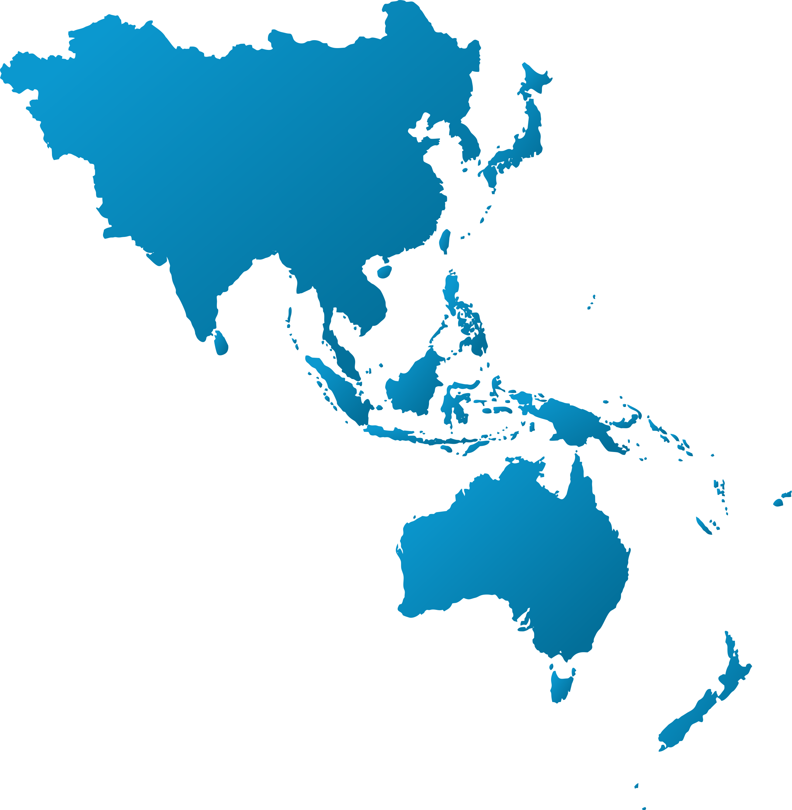

December 02, 2023
About Us
Welcome to APSOPRS
Asia Pacific Society of Ophthalmic Plastic and Reconstructive Surgery (APSOPRS) was established since 2000, with the collaborative effort of all of us, we have gained more international recognition. APSOPRS is a member society for International Council of Ophthalomology (ICO) and Asia Pacific Academy of Ophthalmology (APAO), and APSOPRS is affiliated with American Society of Ophthalmic Plastic and Reconstructive surgery (ASOPRS) and European Society of Ophthalmic Plastic and Reconstructive surgery (ESOPRS).
APSOPRS is constantly involved in numerous international meetings and conferences including World Ophthalmology Congress, American Academy of Ophthalmology (AAO) conference, APAO meeting, ASOPRS and ESOPRS meetings, International Society of Dacryology and Dry eye (ISDDE) meeting, APSOOP conference etc. At a regional level, APSOPRS also participates in numerous national oculoplastic meetings in our member countries. Through all these educational activities, we can educate the next generation and promote the development of specialty, strengthen the collaboration between our member countries and provide the best possible oculoplastic care for our patients.
Read more arrow_right_alt

Members
Our 2023 APSOPRS Officers
We are proud to present the esteemed officers who will lead the Asia Pacific Society of Ophthalmic Plastic and Reconstructive Surgery (APSOPRS) in 2023. These visionary leaders bring a wealth of experience, expertise, and dedication to our society, and they will guide us towards new horizons in ophthalmic plastic and reconstructive surgery.
View Our Officers arrow_right_altEmpowering Visionary Expertise: Join APSOPRS
Welcome to the official page of the Asia Pacific Society of Ophthalmic Plastic and Reconstructive Surgery (APSOPRS)! We are the leading society dedicated to advancing the field of ophthalmic plastic and reconstructive surgery in the Asia Pacific region.
Contact Us arrow_right_altEvents
Upcoming Events
News
Latest News
June 14, 2023 The 4th Webinar of APSOPRS held last May 21, 2022
Introducing Asia Pacific Society of Ophthalmic Plastic and Reconstructive Surgery (APSOPRS)'s cutting-edge Cardiac Care Unit, revolutionizing heart healthcare in the region.
Read MoreMay 21, 2023 Advance of Orbital Disease and Facial Rejuvenation
Asia Pacific Society of Ophthalmic Plastic and Reconstructive Surgery (APSOPRS) takes the lead in promoting community well-being through its enlightening Health and Wellness Symposium.
Read MoreApril 19, 2023 The NUH Ocular Surface, Dry Eyes & Dacryology Symposium
Asia Pacific Society of Ophthalmic Plastic and Reconstructive Surgery (APSOPRS) expresses gratitude to the community for their overwhelming support during the impactful Blood Donation Drive.
Read MoreApril 5, 2023 Asia Pacific Society of Ophthalmic Plastic and Reconstructive Surgery (APSOPRS) Celebrates Successful Blood Donation Drive
Asia Pacific Society of Ophthalmic Plastic and Reconstructive Surgery (APSOPRS) expresses gratitude to the community for their overwhelming support during the impactful Blood Donation Drive.
Read MoreJanuary 28, 2023 ASOPRS 2022 President Announcement
Asia Pacific Society of Ophthalmic Plastic and Reconstructive Surgery (APSOPRS) expresses gratitude to the community for their overwhelming support during the impactful Blood Donation Drive.
Read MoreJanuary 3, 2023 New Year Greetings from the President
Asia Pacific Society of Ophthalmic Plastic and Reconstructive Surgery (APSOPRS) expresses gratitude to the community for their overwhelming support during the impactful Blood Donation Drive.
Read More